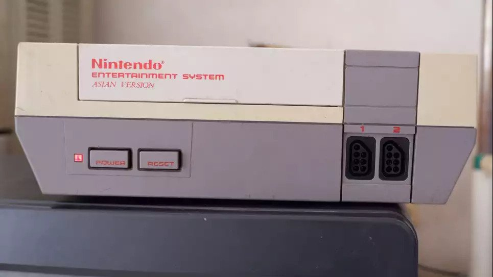

Nintendo in Indonesia
Nintendo in Indonesia
A Document by Rifki K. Factchecked by Farey.
In about 1986, Nintendo started to expand their buisness to other countries, one of these countries is
Indonesia,
located in the south east of the asian landmass.
Nintendo brought their asian version of the NES to Indonesia as (presumably) a test run. We're not sure if
it
was successful or not, but it did become common on online resellers today, like Tokopedia.

The NES Asian Version.
 The NES Asian Version's cartidge. Notice the light gray color.
The NES Asian Version's cartidge. Notice the light gray color.
 The NES Asian Version's action set.
The NES Asian Version's action set.
Notice how despite the fact that Indonesia is closer to Japan than the EU, the cartidge and the NES it self
are based on the PAL Model. The reasoning behind this is unknown (Despite the fact that it looks like the US
Version, It's based off the PAL Version).
Other than some differences in color and (presumably) region locking it to Asian only NES games. Not much is
known about these consoles. Other than their model number (NESA-001).
However there were some differences in each boxes and even models of the Asian NES as shown here:
https://web.archive.org/web/20190504055841/http://nintendoage.com/forum/messageview.cfm?catid=5&threadid=99131.
The Indonesian Nintendo service center was located at Jalan Pintu Air Raya No. 36A. It has since been turned
into various shops, anything regarding about Nintendo in that place has been lost to time.
In 1989, Nintendo (or some other gaming company in the Late 80's) sponsored a game tournament in East Java,
Not much is known about it other than this image.

Sometime in the 90's, Nintendo released the Super Nintendo Asian Version. Again, it's based off the PAL
Version. Even less information is availible
for it. so far no listings were made for this console.
 The Super Nintendo Asian Version's Box.
The Super Nintendo Asian Version's Box.
SPECULATION WARNING!!!
In 1998, the great economy crash happened, Nintendo (probably) did not saw the Indonesian market as profittable
anymore, and left.
To this day, Nintendo has not given Indonesia another chance. Which is a shame, since Nintendo Switch sales
are skyrocketting here (Though, not as much as the Playstation 4).
It would be amazing if people here found more information about the NES and SNES Asian editions, but that's
it for now, This is Rifki, Signing off.